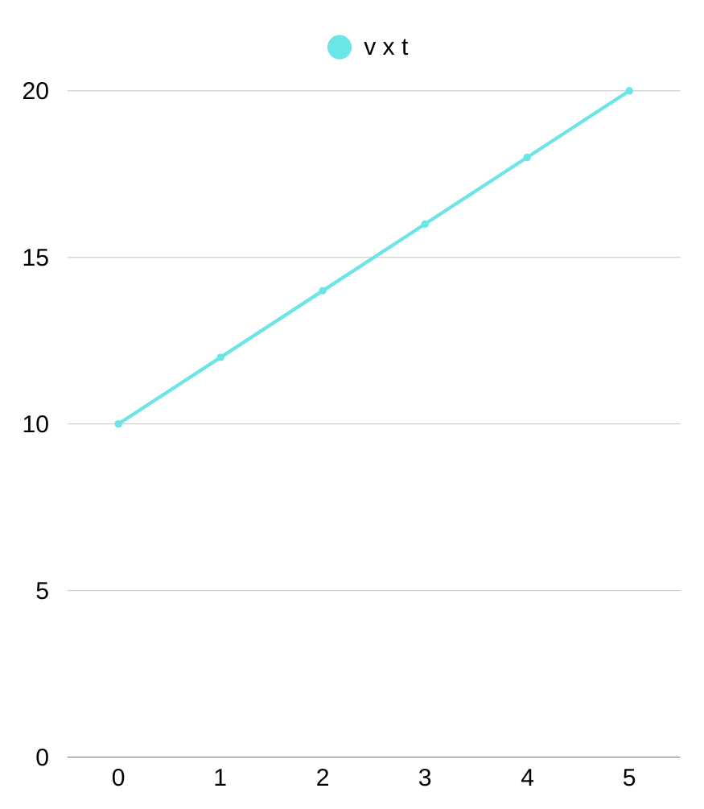
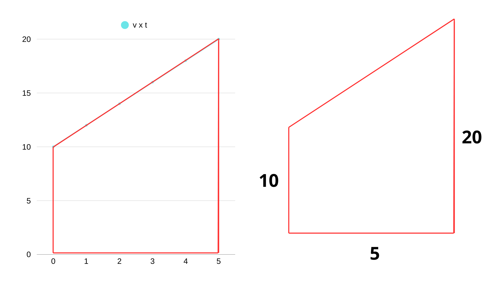
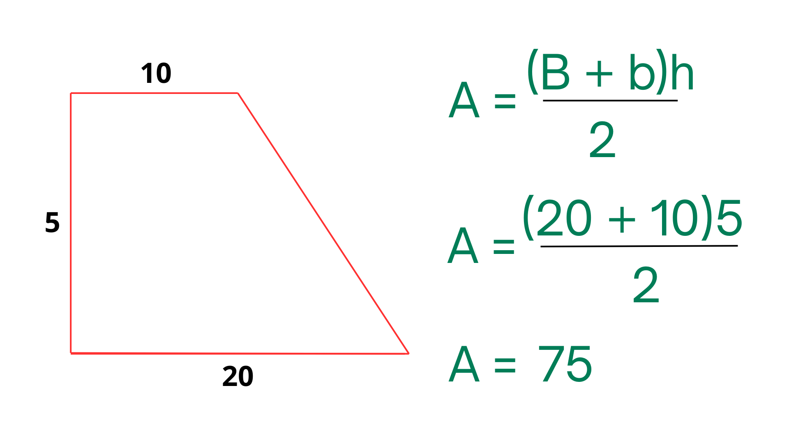
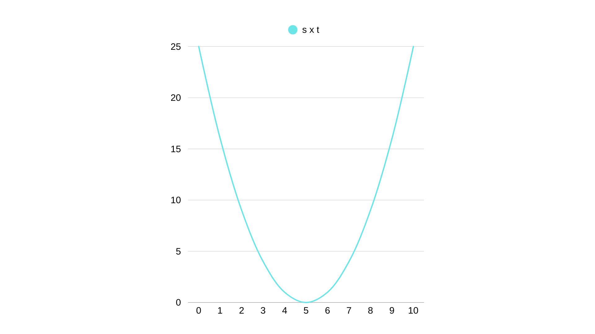
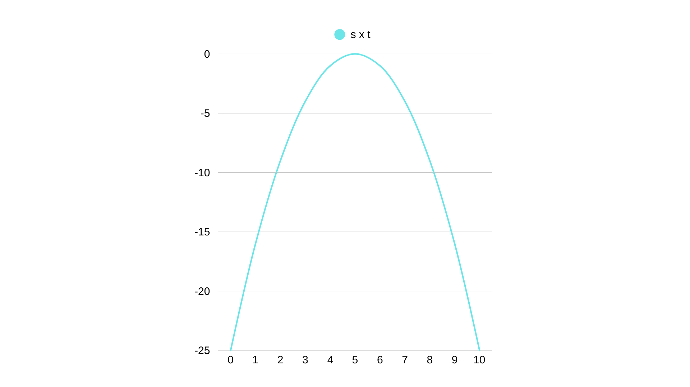
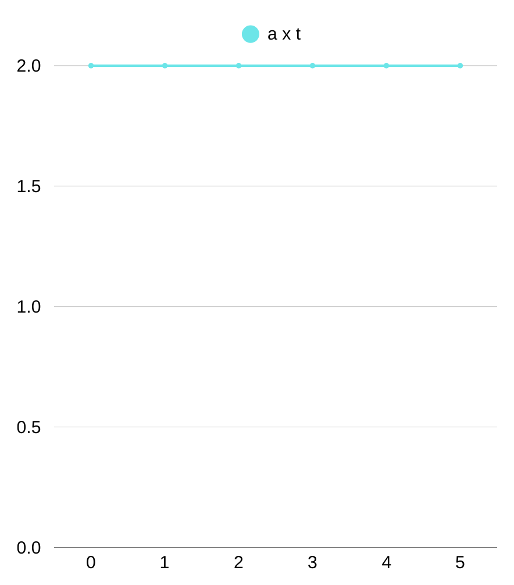

🎯 Por que estudar gráficos do MRUV?
O Movimento Retilíneo Uniformemente Variado (MRUV) ocorre quando um objeto se move em linha reta com aceleração constante — ou seja, sua velocidade muda de forma regular ao longo do tempo.
É o tipo de movimento que acontece quando um carro acelera saindo do repouso, freia bruscamente ou um objeto cai em queda livre.
Os gráficos são ferramentas essenciais para visualizar esse movimento, prever posições futuras e entender fenômenos como frenagem e lançamentos verticais.
📈 Gráfico de Posição × Tempo (s × t)
Este gráfico mostra como a posição de um corpo varia com o tempo no MRUV.
No MRUV, esse gráfico é sempre uma parábola. A curvatura indica a aceleração:
- Concavidade para cima → aceleração positiva (a > 0): o objeto está acelerando.
- Concavidade para baixo → aceleração negativa (a < 0): o objeto está desacelerando (freando).
Exemplo: Um carro parte do repouso com aceleração de 2 m/s². Sua posição aumenta cada vez mais rápido — a parábola sobe rapidamente.
🔍 Como Interpretar a Curvatura
A função horária da posição no MRUV é:
s = s₀ + v₀·t + (a·t²)/2
Essa é uma equação do 2º grau, por isso o gráfico é uma parábola. Quanto maior a aceleração, mais acentuada será a curva.
Dica: Se o vértice da parábola está à direita do eixo vertical, significa que houve um instante em que a velocidade foi zero (como no ponto mais alto de um lançamento vertical).
📊 Gráfico de Velocidade × Tempo (v × t)
Este gráfico mostra como a velocidade muda ao longo do tempo.
No MRUV, esse gráfico é uma reta inclinada. A inclinação dessa reta representa o valor da aceleração.
- Reta crescente → aceleração positiva (v aumenta)
- Reta decrescente → aceleração negativa (v diminui)
- Reta horizontal → aceleração nula (MRU)
Fórmula da aceleração:
a = Δv / Δt
Onde:
Δv = variação da velocidade (final – inicial)
Δt = intervalo de tempo
Exemplo: De t = 2 s a t = 6 s, a velocidade passa de 10 m/s para 30 m/s.
Δv = 30 – 10 = 20 m/s
Δt = 6 – 2 = 4 s
a = 20 / 4 = 5 m/s²
💡 Área Sob o Gráfico (v × t)
A área entre a reta e o eixo do tempo representa o deslocamento total do objeto.
Área = Δs
Exemplo: Um carro acelera de 0 a 20 m/s em 10 segundos. A área é um triângulo:
Base = 10 s, altura = 20 m/s
Área = (10 × 20) / 2 = 100 m
Portanto, o deslocamento foi de 100 metros.
📉 Gráfico de Aceleração × Tempo (a × t)
Como a aceleração é constante no MRUV, este gráfico é uma reta horizontal.
A altura da reta indica o valor da aceleração:
- Acima do eixo → a > 0 (movimento acelerado)
- Abaixo do eixo → a < 0 (movimento retardado)
- Sobre o eixo → a = 0 (MRU)
Dica: A área sob esse gráfico dá a variação da velocidade (Δv).
Área = a × Δt = Δv
🔄 Comparação entre MRU e MRUV
É importante distinguir os gráficos dos dois movimentos:
MRU: velocidade constante → v×t é reta horizontal, s×t é reta inclinada.
MRUV: aceleração constante → v×t é reta inclinada, s×t é parábola.
⚠️ Aplicação no Trânsito
Os conceitos de MRUV são usados diretamente na segurança viária:
- Frenagem: ao frear, o carro executa um MRUV com aceleração negativa. A distância de parada depende do quadrado da velocidade inicial — dobrar a velocidade exige quatro vezes mais espaço para parar.
- Tempo de reação: antes de frear, o motorista leva cerca de 1 segundo para reagir. Nesse tempo, o carro ainda está em MRU, percorrendo dezenas de metros.
- Sistemas ABS: evitam o travamento das rodas, mantendo o controle durante a desaceleração (MRUV controlado).
💡 Dica Final: Use os Gráficos a Seu Favor
- No gráfico s×t, a concavidade indica o sinal da aceleração.
- No gráfico v×t, a inclinação é a aceleração; a área é o deslocamento.
- No gráfico a×t, a área é a variação da velocidade.
- Treine interpretar gráficos mesmo sem números — observe tendências.
- Dirigir com acelerações suaves reduz o risco de derrapagens e colisões.
🧠 Conclusão
Os gráficos do MRUV são muito mais que desenhos — são mapas do movimento acelerado. Dominar sua interpretação permite prever frenagens, analisar quedas livres e entender tecnologias modernas de segurança.
Da próxima vez que pisar no freio, lembre-se: você está executando um MRUV — e a física está ali para garantir sua segurança.